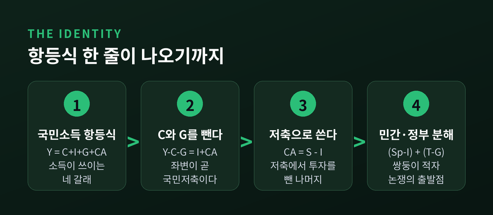
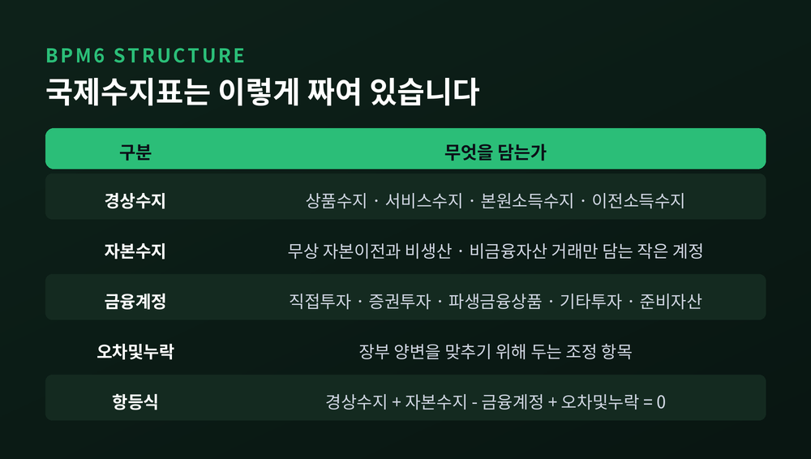
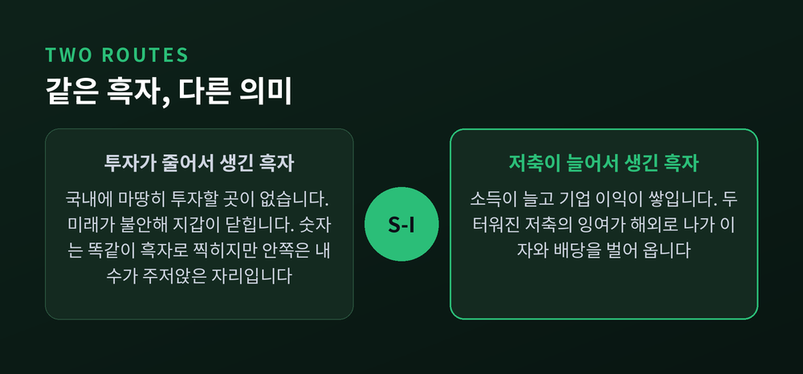
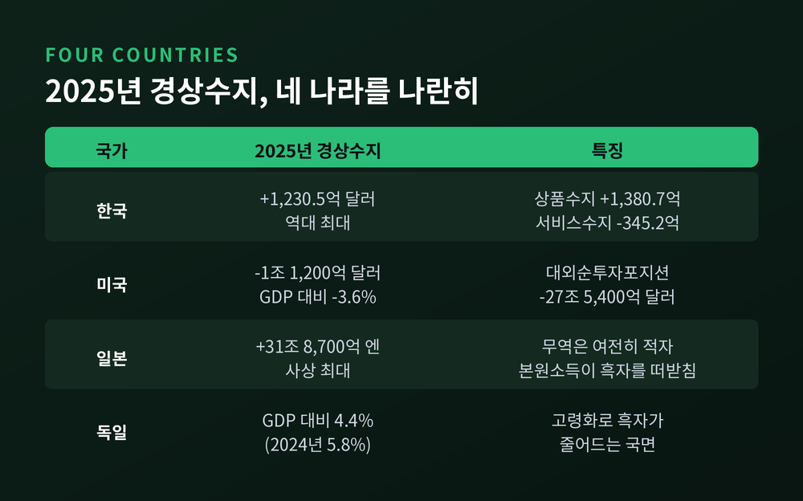
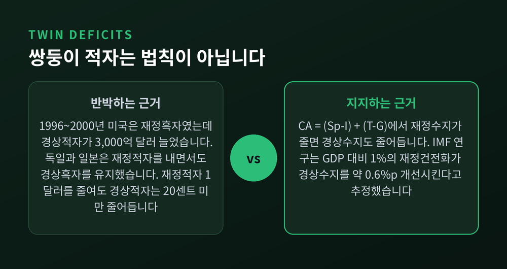
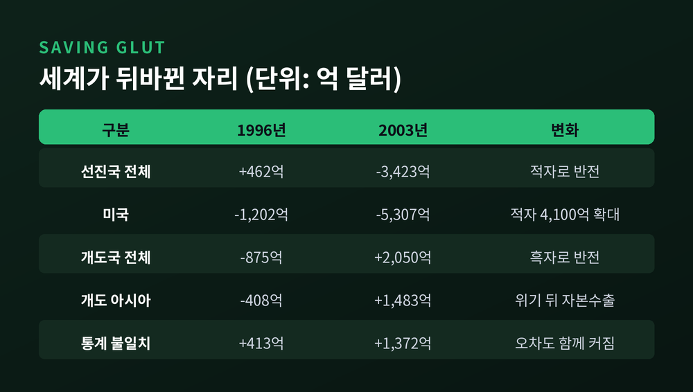

경상수지 흑자는 왜 저축과 투자의 차이인가, 국제수지 항등식으로 읽기

이번 글에서는 경상수지 흑자가 실제로 무엇을 뜻하는지 정리해 보겠습니다. 국민계정 항등식에서 출발해, 흑자가 성적표가 아닌 이유와 주요국 수치까지 차례로 다룹니다. 특정 자산을 권하는 글이 아니라 원리를 설명하는 글입니다.
- 경상수지는 그 나라가 한 해 저축한 금액에서 국내에 투자한 금액을 뺀 나머지입니다. 식으로는 CA = S − I 입니다.
- 흑자가 커지는 경로는 두 가지입니다. 저축이 늘거나, 투자가 줄거나. 숫자는 같아도 의미는 정반대입니다.
- 한국의 2025년 경상수지 흑자는 1,230억 5천만 달러로 역대 최대였습니다. 다만 그 상당 부분은 인구구조가 만든 저축 갭입니다.

항등식 한 줄에서 출발합니다
개방경제의 국민소득 항등식은 이렇게 씁니다.
Y는 국민소득, C는 민간소비, I는 국내총투자, G는 정부지출입니다. 괄호 안은 순수출입니다. 경상수지는 여기에 본원소득수지와 이전소득수지를 더한 개념입니다.
양변에서 C와 G를 빼 보겠습니다.
좌변이 바로 국민저축의 정의입니다. 벌어들인 소득에서 쓰고 남은 몫이니까요. 이것을 S라 두면 식은 한 줄로 줄어듭니다.
여기서 더 나아갈 수 있습니다. 국민저축을 민간과 정부로 쪼개면 이렇게 됩니다.
민간저축이 투자를 넘어서는 부분에, 정부의 재정수지를 더한 값입니다. 정부가 적자를 내도 민간이 그만큼 더 저축하면 경상수지는 흑자가 됩니다. 실제로 독일과 일본이 오랫동안 그런 조합을 유지했습니다.
한 가지만 못 박아 두겠습니다. 이 식은 사후적으로 반드시 성립하는 회계 등식입니다. 인과관계를 알려주지 않습니다. 흑자가 좋은지 나쁜지는 식이 아니라, S와 I가 왜 그 수준이 되었는지를 따져야 나옵니다.
국제수지표는 복식부기로 짜여 있습니다
국제수지표를 처음 보면 항목이 많아 혼란스럽습니다. 구조만 잡으면 단순합니다.
IMF는 2010년 1월 국제수지 편제 매뉴얼 제6판, 이른바 BPM6를 확정 공표했습니다. 한국은행은 2014년 3월 이행을 마쳤습니다. 예전에는 경상수지·자본계정·준비자산증감·오차및누락의 네 부문이었습니다. 지금은 경상수지·자본수지·금융계정 세 부문에 오차및누락이 붙는 형태입니다.
바뀐 핵심은 두 가지입니다. 투자 관련 항목이 새로 만든 금융계정으로 옮겨갔고, 준비자산도 그 안으로 들어갔습니다. 남은 자본수지는 무상 자본이전과 비생산·비금융자산 거래만 담는 아주 작은 계정이 되었습니다.
경상수지 자체는 네 항목으로 나뉩니다. 상품수지, 서비스수지, 본원소득수지, 이전소득수지입니다. 본원소득수지는 해외에 투자해서 받는 배당과 이자를 담습니다. 뒤에서 일본 사례를 볼 때 다시 등장할 항목입니다.

거래 하나는 반드시 두 번 기입됩니다. 그래서 이론상 다음이 성립합니다.
문제는 각 항목의 자료 출처가 제각각이라는 데 있습니다. 세관 통계, 은행 보고, 설문이 한 장부 위에서 정확히 맞아떨어지기는 어렵습니다. 그 간극을 메우려고 만든 조정 항목이 오차및누락입니다. 통계의 실패가 아니라, 복식부기를 유지하기 위한 장치로 보시는 편이 정확합니다.
지구 전체로 넓히면 문제가 더 선명해집니다. 누군가의 흑자는 누군가의 적자이므로 전 세계 경상수지 합은 0이어야 합니다. 그런데 버냉키가 2005년 연설에서 제시한 표를 보면, 전 세계 통계 불일치는 1996년 413억 달러에서 2003년 1,372억 달러로 오히려 커졌습니다. 지구가 우주와 무역을 하는 것도 아닌데 말입니다.
같은 흑자라도 의미가 정반대일 수 있습니다
CA = S − I 를 다시 보겠습니다. 오른쪽 값이 커지는 길은 둘뿐입니다. S가 늘거나, I가 줄거나.
첫 번째 경우는 반길 만합니다. 소득이 늘고 기업 이익이 쌓여 저축이 두터워진 결과입니다. 그 잉여가 해외로 나가 이자와 배당을 벌어 옵니다.
두 번째 경우는 다릅니다. 국내에 마땅히 투자할 곳이 없어서, 혹은 미래가 불안해서 지갑이 닫힌 결과입니다. 숫자는 첫 번째와 똑같이 흑자로 찍힙니다. 그러나 안을 들여다보면 내수가 주저앉은 자리입니다.

버냉키가 남긴 표현이 이 지점을 정확히 찌릅니다.
"미국 무역수지는 개의 꼬리다."
대부분은 국내외 소득과 자산가격, 금리, 환율에 의해 수동적으로 결정된다는 뜻입니다. 꼬리를 흔들어 개를 움직이려는 정책은 잘 듣지 않습니다.
네 나라의 2025년 숫자를 나란히 놓아 봅니다
추상적인 이야기를 숫자로 내려 보겠습니다.
한국은행 「2025년 12월 국제수지(잠정)」에 따르면 한국의 2025년 경상수지는 1,230억 5천만 달러 흑자였습니다. 연간 기준 역대 최대입니다. 직전 최고치인 2015년 1,052억 달러를 큰 폭으로 넘어섰습니다. 내역을 보면 상품수지 1,380억 7천만 달러 흑자, 서비스수지 345억 2천만 달러 적자, 본원소득수지 279억 2천만 달러 흑자입니다. 흑자가 상품 한 축에 크게 기대고 있고, 서비스수지는 구조적으로 적자입니다.
미국은 반대편에 있습니다. 미국 경제분석국(BEA)이 2026년 3월 발표한 자료를 보면 2025년 경상수지 적자는 1조 1,200억 달러였습니다. GDP 대비 3.6%로, 2024년의 4.0%보다 줄었습니다. 다만 대외순투자포지션은 2025년 말 마이너스 27조 5,400억 달러로 1년 사이 1조 달러가량 더 악화됐습니다. 매년 모자란 저축을 해외에서 빌려온 기록이 쌓인 결과입니다.

일본이 흥미롭습니다. 2025년 경상수지 흑자는 31조 8,700억 엔으로 전년보다 11.1% 늘며 사상 최대를 기록했습니다. 그런데 상품 무역은 여전히 적자입니다. 적자 폭이 3조 6,600억 엔에서 8,487억 엔으로 줄었을 뿐입니다. 흑자를 떠받친 것은 본원소득수지였습니다. 2025년 4월부터 9월까지만 22조 2,800억 엔으로 반기 기준 최대였습니다. 예전에는 물건을 팔아 벌었습니다. 지금은 쌓아 둔 해외자산이 벌어다 줍니다.
독일은 2024년 경상수지가 GDP 대비 5.8%였습니다. 2025년 12월 기준으로는 4.4%로 집계됩니다. 다만 이 수치는 민간 집계 기관 자료라 국제기구 원자료와 차이가 있을 수 있습니다.
한국의 흑자는 인구구조가 만든 부분이 큽니다
한국의 기록적인 흑자를 어떻게 읽어야 할까요. KDI의 분석이 실마리를 줍니다.
메커니즘은 간단합니다. 유·청년층 비중이 줄면 투자수요가 축소됩니다. 중·장년층 비중이 늘면 저축이 증가합니다. CA = S − I 의 양변이 동시에 벌어집니다. KDI는 유·청년층 비중이 1%포인트 줄고 중·장년층 비중이 1%포인트 늘면 GDP 대비 경상수지 흑자가 0.5~1.0%포인트 오른다고 추정했습니다.
여기에 한 단계가 더 붙습니다. 인구구조 변화로 국내 투자수익률이 떨어지면, 노후를 대비해 모은 돈이 국내가 아니라 해외자산으로 향합니다. 실제로 2025년 12월 금융계정에서 내국인의 해외주식 투자 확대가 자산 증가를 이끌었습니다.
KDI 김미루 국채연구팀장은 『나라경제』 2025년 9월호에 이런 취지로 썼습니다. 소비 부진과 투자 부진이 맞물리면서 반갑지만은 않은 흑자 추세가 이어지고 있다는 것입니다. 재정·통화정책만으로는 이 구조를 바꾸기 어렵고, 규제혁신과 산업구조 고도화, 여성·외국인력 활용 확대가 필요하다는 결론이었습니다.
독일도 같은 길을 먼저 걸었습니다. ZEW와 울름대학교가 독일 연방재무부 의뢰로 수행한 연구는 독일의 흑자가 2030년경 사라지고 2033년부터는 적자로 돌아서 GDP 대비 연 2% 수준에서 안정될 것으로 전망했습니다. 은퇴자가 쌓아 둔 자산을 헐어 쓰기 시작하면 총저축률이 내려가기 때문입니다. 분데스방크 연구는 고령화가 독일 흑자의 GDP 대비 2~3%포인트를 설명한다고 추정했습니다.
다만 겸손하게 덧붙이겠습니다. ZEW 연구는 2012년 자료이고, 독일은 2024년에도 여전히 5%대 흑자를 냈습니다. 인구구조가 방향을 정한다는 말과, 그 시점을 정확히 맞힌다는 말은 다릅니다.
쌍둥이 적자는 성립할 때도, 아닐 때도 있습니다
CA = (Sp − I) + (T − G) 를 보면 자연스러운 추측이 나옵니다. 재정적자가 커지면 경상적자도 커진다는 쌍둥이 적자 가설입니다.
반대편에는 배로(Barro)가 1974년 제시한 리카도 등가 가설이 있습니다. 정부가 빚을 내면 가계는 미래의 증세를 예상해 저축을 그만큼 늘립니다. 그러면 두 항이 상쇄되어 경상수지는 움직이지 않는다는 논리입니다.

실증은 갈립니다.
지지하는 쪽에서는 IMF 연구가 자주 인용됩니다. GDP 대비 1%의 재정건전화가 경상수지를 GDP 대비 약 0.6%포인트 개선시킨다는 추정입니다.
반박하는 쪽의 근거는 구체적입니다. 버냉키는 두 가지 반례를 들었습니다. 첫째, 1996년부터 2000년까지 미국 연방재정은 흑자였고 앞으로도 흑자가 유지될 것으로 전망됐습니다. 그런데 같은 기간 경상적자는 약 3,000억 달러 늘었습니다. 둘째, 독일과 일본은 미국과 비슷한 규모의 재정적자를 내면서도 대규모 경상흑자를 유지했습니다. 여기에 연준 내부 연구는 연방재정적자를 1달러 줄여도 경상적자는 20센트 미만 줄어든다고 추정했습니다.
정리하면 이렇습니다. 쌍둥이 적자는 법칙이 아니라 경험적 명제입니다. 결정적인 변수는 재정수지 자체가 아니라, 그 변화가 민간저축과 투자를 얼마나 움직이느냐입니다.
버냉키의 글로벌 저축과잉 가설
2005년 3월 10일, 당시 연준 이사였던 벤 버냉키는 버지니아에서 한 강연에서 문제를 이렇게 뒤집었습니다. 미국 경상적자의 주된 원인은 미국 밖에 있다는 것이었습니다.
숫자가 근거였습니다. 미국 경상적자는 1996년 1,202억 달러, GDP의 1.5%였습니다. 2000년에는 4,140억 달러, 4.2%가 됐습니다. 2004년 첫 세 분기에는 연율 6,350억 달러, 약 5.5%까지 올라갔습니다. 같은 기간 미국 총저축률은 1985년 GDP의 18%에서 1995년 16%, 2004년에는 14% 아래로 내려갔습니다.

그런데 미국 적자를 누가 받아 줬는가가 핵심이었습니다. 1996년부터 2003년까지 미국 경상적자는 약 4,100억 달러 늘었는데, 다른 선진국이 흡수한 몫은 220억 달러에 불과했습니다. 나머지는 개도국에서 왔습니다. 개도국은 같은 기간 집단 적자 875억 달러에서 흑자 2,050억 달러로 2,930억 달러나 이동했습니다.
원인은 연쇄 금융위기였습니다. 1994년 멕시코, 1997년과 1998년 동아시아, 1998년 러시아, 1999년 브라질, 2002년 아르헨티나. 위기를 겪은 신흥국들은 순자본수입국에서 순자본수출국으로 방향을 틀었습니다. 외환보유액을 쌓았고, 정부가 사실상 금융중개자가 되어 국내 저축을 미국 국채로 돌렸습니다.
고령화도 한 축이었습니다. 버냉키가 인용한 유엔 전망에 따르면 20~64세 인구 100명당 65세 이상 인구는 미국이 2005년경 21명에서 2030년 34명으로 늘어납니다. 같은 시점 유로존은 46명, 일본은 57명입니다. 2050년이면 유로존 약 60명, 일본 약 78명입니다. 저축 동기는 강한데 국내 투자기회는 제한적인 나라들이 집단적으로 흑자를 내려 한 것입니다.
버냉키는 여기에 규범적 진단을 하나 붙였습니다. 교과서 논리대로라면 자본이 풍부한 선진국이 흑자를 내고 개도국에 빌려주는 것이 자연스러운 방향입니다. 현실은 그 반대로 흐르고 있고, 장기적으로 바람직하지 않다는 것이었습니다.
환율은 원인이면서 동시에 결과입니다
환율 이야기를 빼놓을 수 없습니다.
표준 이론은 명쾌합니다. 실질환율이 절하되면 수출이 싸지고 수입이 비싸져 경상수지가 개선됩니다. 옵스펠드와 로고프는 2005년 연구에서 대규모 경상적자를 줄이려면 실질환율이 20~30% 절하되어야 한다고 추정했습니다.
그런데 실증은 깔끔하지 않습니다. 실질실효환율 하락이 오히려 경상적자를 키웠다는 패널 분석도 있습니다. 환율이 고평가된 나라의 경상수지 성과가 나쁘다는 경향은 확인되지만, 인과의 방향이 한쪽으로만 흐르지는 않습니다.
버냉키의 설명 틀이 여기서 유용합니다. 그는 환율과 자산가격, 금리를 저축과 투자의 불균형을 조정하는 내생 변수로 봤습니다. 1996년부터 2000년까지는 주가와 달러 급등이 조정 역할을 했고, 2000년 이후에는 낮아진 실질금리와 주택가격이 그 자리를 이어받았습니다.
결국 환율 조정은 저축과 투자의 격차를 메우는 과정에서 나타나는 현상에 가깝습니다. 지속적인 개선은 재정이나 민간의 저축·투자 행태가 바뀌어야 옵니다.
IMF가 흑자국에 권하는 것
국제기구의 시각을 보면 흑자에 대한 평가가 분명해집니다.
IMF가 2025년 7월 이사회에서 논의한 「대외부문 보고서(External Sector Report)」는 2024년 글로벌 경상수지 불균형이 확대됐다고 진단했습니다. 초과 불균형은 10년 만에 가장 큰 폭으로 늘었고, 중국과 미국, 유로존이 이를 주도했습니다. 눈여겨볼 대목은 그다음입니다. 저축과 투자의 관점에서 보면, 경상수지가 갈라진 데 가장 크게 기여한 것은 투자율의 변화였다는 분석입니다.
정책 권고는 양쪽으로 갈립니다. 초과 적자국에는 신뢰할 만한 재정건전화를 권합니다. 초과 흑자국에는 투자를 촉진하고 과잉저축을 줄이라고 권합니다. 사회안전망을 넓히고, 여력이 있다면 재정적자를 늘리라는 조언까지 붙어 있습니다.
흑자국에 "저축을 줄이고 투자를 늘려라"라고 권고한다는 사실이 많은 것을 말해 줍니다. IMF가 2026년 7월 내놓은 후속 보고서 역시 불균형이 다시 커지고 있으며 흑자국과 적자국 양쪽의 국내 정책 조정이 필요하다는 결론이었습니다.
정리하면 이렇습니다.
경상수지 흑자는 성적표가 아니라 사진입니다. 그 나라가 한 해 동안 얼마를 저축하고 얼마를 국내에 투자했는지, 그 차이를 찍어 둔 사진입니다. 수출 경쟁력이 좋아도 흑자가 나고, 투자가 얼어붙어도 흑자가 납니다.
그래서 숫자 앞에 붙일 질문은 하나입니다. 이 흑자는 저축이 늘어서 생겼는가, 투자가 줄어서 생겼는가.
한국의 2025년 흑자가 역대 최대라는 소식이 반가우냐고 물으신다면, 저는 조금 망설이겠습니다. 그 답은 내년 투자 지표를 보고 드리는 편이 정직할 것 같습니다.